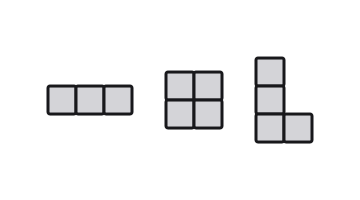

FA sumber 117–126 — preview sebelum human review
Belum masuk database/runtime. Baseline lama sudah diarsipkan.
Master tetap A–E
Web 1 · sumber 117
easykey A
Web 2 · sumber 118
easykey D
Web 3 · sumber 119
easykey E
Web 4 · sumber 120
mediumkey C
Web 5 · sumber 121

mediumkey B
Web 6 · sumber 122
mediumkey E
Web 7 · sumber 123
mediumkey D
Web 8 · sumber 124
hardkey A
Web 9 · sumber 125
hardkey D
Web 10 · sumber 126
hardkey C